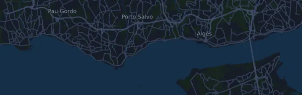

EDP Maratona de Lisboa 42,4 km
- Distance
- 42,4 km
- Dénivelé positif
- ↑ 389 m
- Point culminant
- 40 m d’altitude
- Terrain
- Route
- Profil
- Légèrement vallonné
Profil d’altitude
Prépare-toi avec Mila
Mila est une app avec un coach de course à pied. Ajoute une course à ton plan : le coach planifie tes semaines jusqu’au départ selon ta forme, et te donne un pronostic de temps et un plan pour l’allure, l’hydratation et l’énergie sur le parcours.

La bonne séance. Le bon jour.
Le parcours

À propos du parcours
EDP Maratona de Lisboa est une course sur route de 42,4 km (Carcavelos (Cascais), Portugal). Le parcours compte 389 m de dénivelé positif et 396 m de dénivelé négatif, soit 9,2 m par km : il est donc légèrement vallonné. Le point culminant est à 40 m d’altitude et le point le plus bas à -1 m.
La plus grande montée commence au km 21,5 : 26 m de dénivelé sur 2,9 km, à 0,9 % de moyenne, jusqu’à 26 m d’altitude. Au total, le parcours compte 2 montées d’au moins 25 m ; la dernière commence au km 21,5.
Dans l’app Mila, le coach décrit le parcours en détail dans ta langue et planifie ton allure et ton ravitaillement.
Montées
| Début | Longueur | Dénivelé | Pente | Sommet (m d’altitude) |
|---|---|---|---|---|
| km 9,4 | 790 m | 25 m | 3,2 % | 40 |
| km 21,5 | 2,9 km | 26 m | 0,9 % | 26 |
Tableau d’allures
EDP Maratona de Lisboa 42,4 km en 3:00:00 – allure au km et temps de passage
4:15 min/km · km 10 : 42:27 · km 21,1 : 1:29:33 · km 30 : 2:07:20 · km 40 : 2:49:46 · arrivée : 3:00:00
EDP Maratona de Lisboa 42,4 km en 3:30:00 – allure au km et temps de passage
4:57 min/km · km 10 : 49:31 · km 21,1 : 1:44:29 · km 30 : 2:28:33 · km 40 : 3:18:04 · arrivée : 3:30:00
EDP Maratona de Lisboa 42,4 km en 4:00:00 – allure au km et temps de passage
5:40 min/km · km 10 : 56:35 · km 21,1 : 1:59:24 · km 30 : 2:49:46 · km 40 : 3:46:22 · arrivée : 4:00:00
EDP Maratona de Lisboa 42,4 km en 4:30:00 – allure au km et temps de passage
6:22 min/km · km 10 : 1:03:40 · km 21,1 : 2:14:20 · km 30 : 3:11:00 · km 40 : 4:14:39 · arrivée : 4:30:00
Les temps supposent une allure régulière du début à la fin. C’est un simple calcul, pas un pronostic : dans les montées, dans la foule et aux ravitaillements, l’allure varie.
Questions fréquentes
Quand a lieu EDP Maratona de Lisboa 42,4 km ?
La date de la prochaine édition n’est pas encore fixée. La dernière édition a eu lieu le 10 octobre 2026.
EDP Maratona de Lisboa 42,4 km : quelle distance et quel dénivelé ?
La course fait 42,4 km, avec 389 m de dénivelé positif et 396 m de dénivelé négatif. Le point culminant est à 40 m d’altitude.
EDP Maratona de Lisboa 42,4 km : à quoi ressemble le parcours ?
Le parcours est légèrement vallonné, avec 9,2 m de dénivelé par km en moyenne. Il compte 2 montées d’au moins 25 m ; la plus grande commence au km 21,5 : 26 m sur 2,9 km. Il va du départ à une arrivée située ailleurs. On y court sur route.
EDP Maratona de Lisboa 42,4 km : comment gérer mon allure ?
Vise un effort régulier plutôt qu’une allure régulière : laisse l’allure baisser dans les montées, reprends-la quand le terrain s’aplanit, et retiens-toi sur les premiers kilomètres. Les plus grandes montées commencent au km 9,4 et km 21,5. Dans Mila, tu obtiens un plan d’allure pour ce parcours, adapté à ta forme.
D’autres courses de ce type
Autres courses à proximité
- EDP Meia Maratona de Lisboa 21,2 km7 mars 2027 · Almada (Ponte 25 de Abril, Lisboa), Portugal
- 101ª Corrida Internacional de São Silvestre 15 km31 décembre 2026 · São Paulo, Brésil
- 20 km de Bruxelles30 mai 2027 · Bruxelles, Belgique
Prépare-toi avec Mila
La bonne séance. Le bon jour.
Les informations proviennent du fichier du parcours et de l’organisateur. Vérifie la date, les heures de départ et le règlement auprès de l’organisateur.
Mila n’est ni affiliée à l’organisateur ou aux sponsors de la course, ni sponsorisée ou approuvée par eux. Les noms et les marques appartiennent à leurs propriétaires. Organisateur ou ayant droit ? Demander une modification ou un retrait